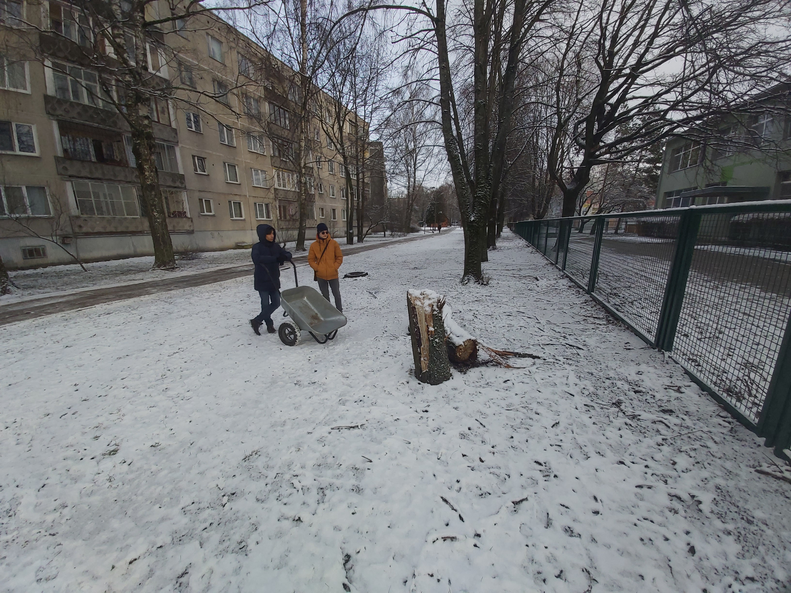

05.10.2024
01.11.2024
03.01.2025
Sākot darbu pie sola izgatavošanas, vispirms meklējām piemērotus materiālus. Sēžamās daļas dēļus mēs atradām Latvijas Universitātes Izglītības zinātņu un psiholoģijas fakultātē. Tur bija pieejami veci, bet vēl izmantojami koka dēļi, kurus nolēmām pārstrādāt un izmantot sava sola projektam. Tas mums palīdzēja ne tikai ietaupīt līdzekļus, bet arī domāt videi draudzīgi – izmantojot otrreizējus materiālus.
Pēc tam šos materiālus mēs nogādājām uz mūsu skolu – Rīgas Zolitūdes ģimnāziju, kur notika turpmākais darbs pie sola izgatavošanas
Pēc tam mēs sākām meklēt piemērotas sola kājas un tās atradām Anniņmuižas mežaparkā, kur ieguvām vajadzīgās kokas balsts. Tajā pašā laikā mēs pamanījām jau nokritušu koka baļķi, kuru nolēmām izmantot sava sola izgatavošanai. Tā vietā, lai meklētu jaunu kokmateriālu, izmantojām dabā pieejamos resursus.
